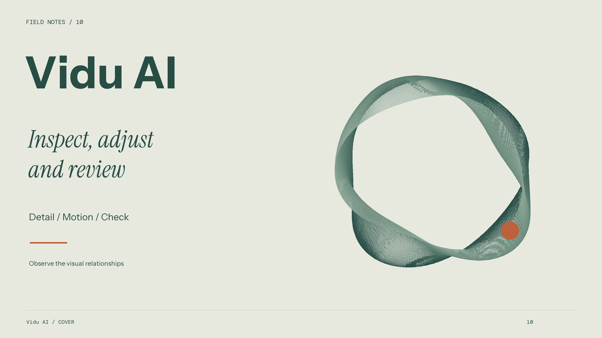
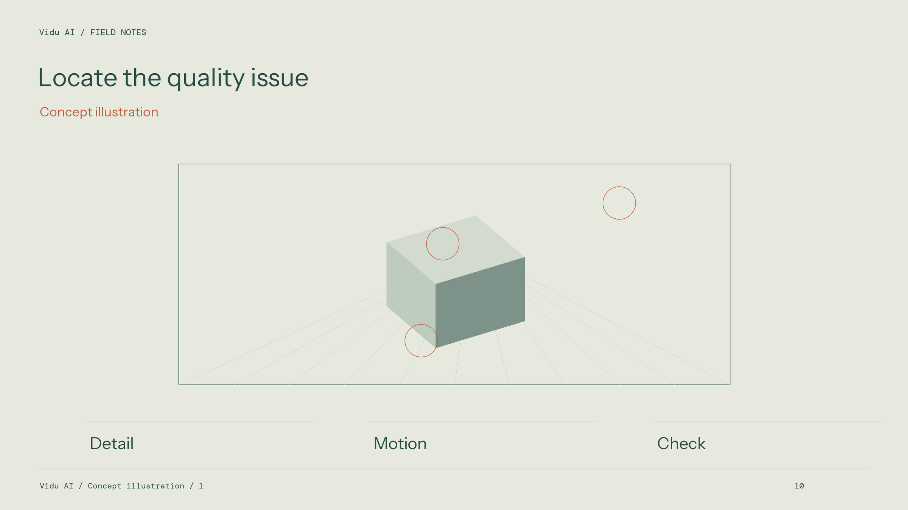
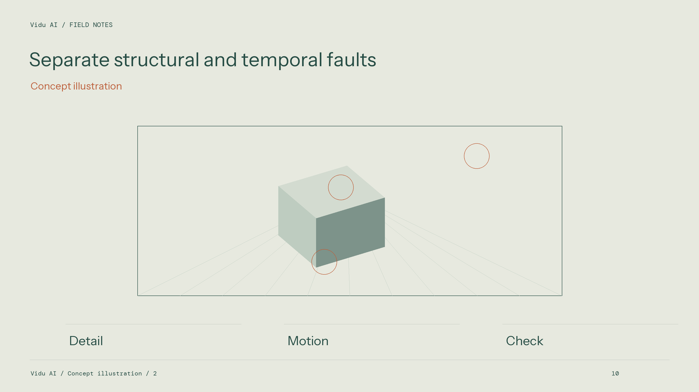
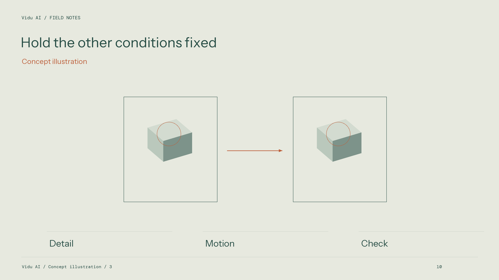
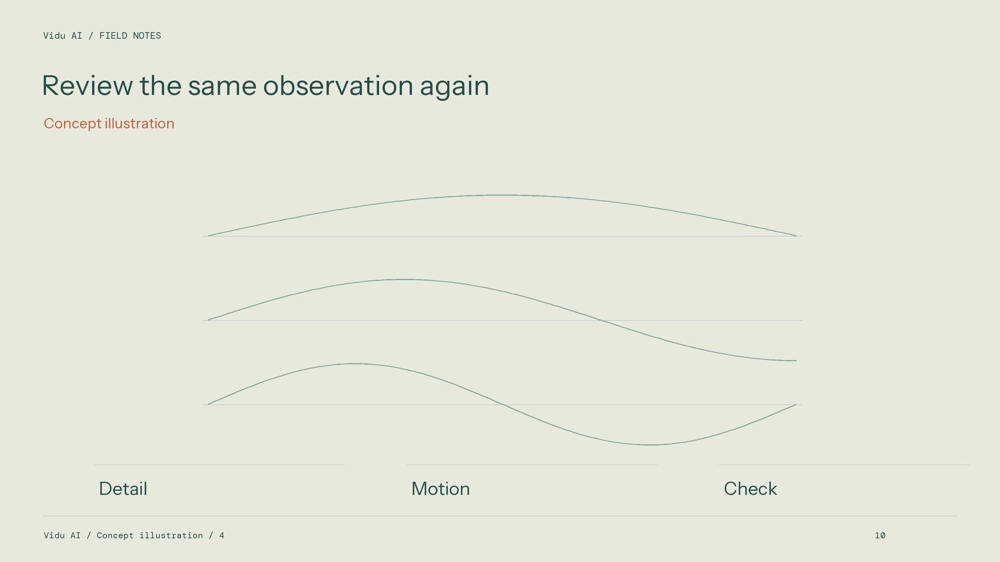
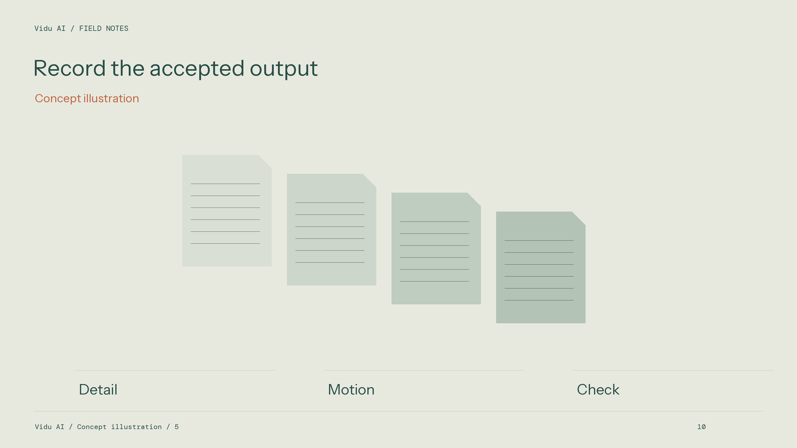

Vidu AI Practical Handbook: Commercial Generation Troubleshooting and Image-Quality Tuning

In real production environments of film post, advertising visuals and short-drama mass production, video generation is never one-click magic — it is a serious engineering process full of tuning and anomaly triage. Even Vidu AI, widely recognised as strong on high dynamics and character consistency, can occasionally show edge flicker, micro text creep, water mesh-tearing and shadow noise under extreme backlight, ultra-wide camera moves or multi-fluid interaction if parameters are wrong or storyboard logic conflicts. As a benchmark tool among the best AI video models of 2026, only by fully mastering its troubleshooting logic can teams keep impeccable stable delivery on long productions and truly make it the most battle-ready model toward 2027.

Concept illustration: Locate the quality issue. Detail / Motion / Check.
This handbook aggregates troubleshooting experience summarised by front-line tuning engineers across hundreds of hours of high-intensity field work, providing directly actionable tuning/triage lookup tables and solutions.
1. Quick triage guide for core production anomalies
For the four highest-frequency image-quality issues in daily production, cause analysis and quick solutions:

Concept illustration: Separate structural and temporal faults. Detail / Motion / Check.
| Anomaly | Underlying cause triage | Front-line engineering fix |
|---|---|---|
| High-frequency temporal flicker | Sampling iteration steps too low, or lighting-environment descriptions conflict | Raise sampling steps into a balanced range; strictly lock a single key-light colour temperature and cast direction in the prompt |
| Fluid / edge tearing (Mesh Tearing) | Particle flow too fast, beyond spatiotemporal Patch receptive field | Add liquid physical viscosity and surface-tension definitions in the prompt; moderately lower motion amplitude |
| Rigid-object soft deformation (Plastic Distortion) | Camera rotation angle too large; lacking structural-rigidity prior guidance | Use orthographic/side geometric perspective in the first frame; strengthen “keep absolute geometric rigidity (Rigid Body)” in the prompt |
| Shadow banding and noise (Dark Area Noise) | Latent denoising trajectory drift; limited dynamic range | Generate in Log greyscale then grade; avoid stacking extreme “pure black background” semantics in the prompt |
2. Deep tuning philosophy: balancing core control dimensions

Concept illustration: Hold the other conditions fixed. Detail / Motion / Check.
In industrial video debugging, many beginners blindly maximise a single parameter. In fact, balance and complementarity are the base guarantee of high yield:
Dimension 1: Prompt relevance weight vs frame stability
- Tuning law: when weight is too high, the model forcibly matches every prompt detail — colour saturation blows out, edges harden and look burnt; when too low, video easily drifts from storyboard intent;
- Balance range: in day-to-day commercial setups on viduai.co, keep moderate relevance guidance and leave spare compute for spatiotemporal continuity smooth denoising to get the most native cinematic material feel.
Dimension 2: Motion amplitude vs structural geometric fidelity

Concept illustration: Review the same observation again. Detail / Motion / Check.
- Steady dolly and product ads: set motion amplitude in a lower gentle range so letter edges on commercial packaging stay ruler-straight and trademark patterns absolutely still;
- Natural scenery and empty-shot epics: raise motion amplitude to a medium-active range to fully release natural randomness of atmospheric volume fog, leaf sway and water glitter;
- Fight stunts and extreme sports: keep motion amplitude mid-high — release skeletal impact energy while avoiding exceeding U-ViT’s spatiotemporal receptive field.
3. Standard QA acceptance checklist for delivered shots
Before marking a shot pass and handing to editorial, QA must verify frame by frame against this five-step list:

Concept illustration: Record the accepted output. Detail / Motion / Check.
- Horizon and vanishing-point tilt: through the whole move, does background horizon displace steadily with no aimless wave undulation;
- Light-projection topology consistency: do shadow length and direction always match key-light position; any fake shadows as the character walks;
- Contact-surface physical judgement: do footfalls / cup-plate collisions penetrate, sink or float; does water hitting a surface splash reasonably;
- Edge contour without ghosting: at high-contrast contours (night hair, building corners) no jitter mosaic under frame-by-frame play;
- Intact colour dynamic range: highlights not clipped; shadows retain recoverable detail layers.
Following the above standardised flow, teams thoroughly converge occasional uncertainty into standardised industrial capacity and achieve high-quality delivery of Vidu AI across full commercial scenarios.